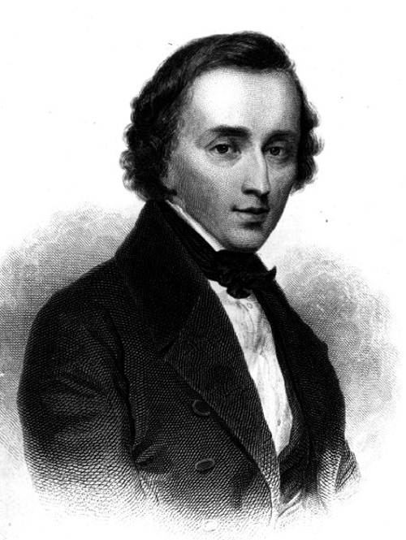

이름 : 쇼팽
(Frédéric François Chopin)
출생 : 1810년 3월 1일, 폴란드 Żelazowa Wola
ps. 쇼팽의 연습 피아노곡이라 불리는 에튀드 곡들은
난이도가 정말 높은 편이다.
이로 쇼팽의 피아노 실력은 정말 대단한 것으로 느껴진다.
대표곡
추격(에튀드 中)
즉흥환상곡
흑건(에튀드 中)
혁명(에튀드 中)
음원 감상(유튜브)
(재생되지 않을 경우, 하단에 YOUTUBE.COM을 클릭하여 유튜브에서 보시길 바랍니다.)